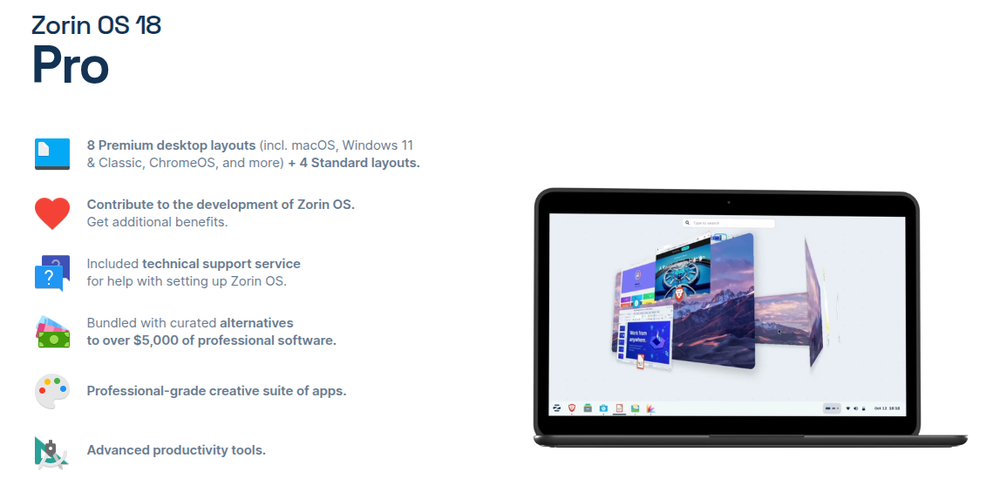
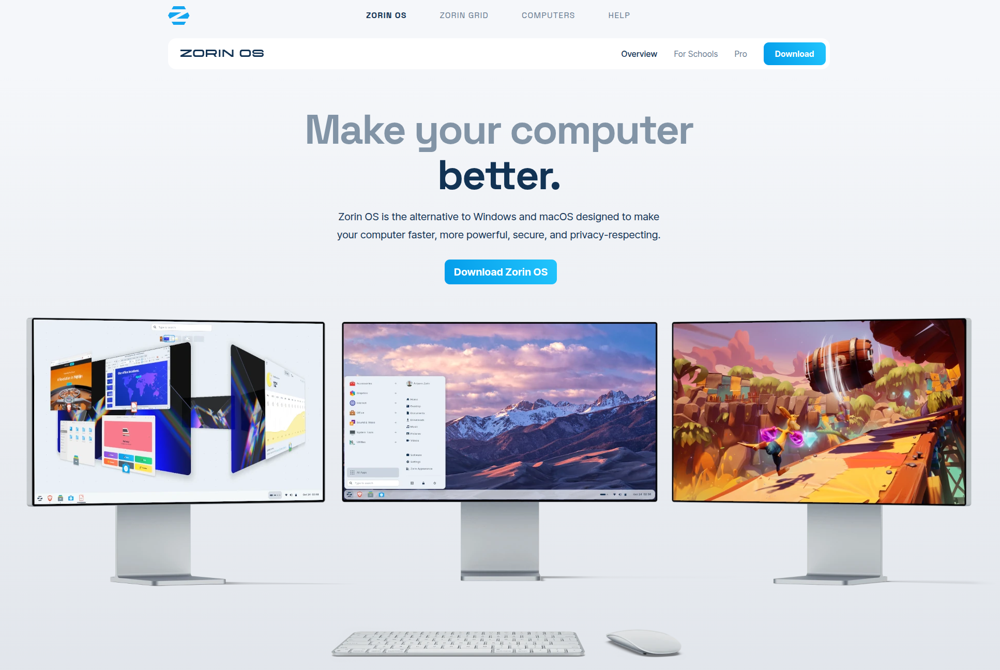

Zorin Guide

Setting up Zorin OS alongside Windows 10 is a great way to experience Linux without fully committing to it. This process is called "dual-booting." Here's a simple, detailed, step-by-step guide to get you started!
Your Guide to Dual-Booting Zorin OS with Windows 11/10
This guide will walk you through everything from preparing your computer to selecting your operating system at the start.
What You'll Need (Requirements):
- A Computer with Windows 11/10 Installed: This guide assumes you already have Windows 10 up and running.
- Zorin OS Download: We'll get the Zorin OS installation file.
- Zorin OS Core (Free): This is the standard, free version and is excellent for most users. It has all the essential features.
- Zorin OS Pro (Paid): This version includes more advanced features, professional software, and unique layouts. You purchase it to support the developers.
- Zorin OS Lite (Free, for older/weaker computers): If your computer is older or has less powerful hardware, this version uses less memory and runs faster.
- Zorin OS Education (Free, for schools): Geared towards educational use.
- USB Stick (8GB or larger): This will be used to create a "bootable" USB stick, which is like a special key to start your computer with Zorin OS.
- Rufus Software (Free): A small program for Windows that helps you create the bootable USB stick.
- Reliable Internet Connection: For downloading Zorin OS and Rufus.
- Important: Backup Your Important Files! While this process is generally safe, it's always a good idea to save your precious documents, photos, and videos to an external hard drive or cloud storage (like Google Drive, OneDrive, Dropbox). Better safe than sorry!

Step 1: Prepare Windows 11/10
Before we touch Zorin OS, we need to make some space on your computer's hard drive for it.
1.1 Create Free Space (Shrink Your Windows Partition)
Windows and Zorin OS need their own space to live on your hard drive. We'll "shrink" your Windows space to make room for Zorin.
- Open Disk Management:
- Press the
Windows Key + Xon your keyboard. - From the menu that pops up, select "Disk Management."
- Press the
- Identify Your Windows Drive:
- You'll see a list of your computer's drives. Your main Windows drive is usually labeled
(C:)and has a "Boot, Page File, Crash Dump, Primary Partition" status.
- You'll see a list of your computer's drives. Your main Windows drive is usually labeled
- Shrink the Volume:
- Right-click on your
(C:)drive. - Select "Shrink Volume..."
- A window will appear asking how much to shrink. This number is in MB (Megabytes).
- How much space? Zorin OS recommends at least 10 GB (10,000 MB) for basic installation, but 20-50 GB (20,000 - 50,000 MB) is highly recommended if you plan to install more software or save files in Zorin. You can even go larger if you have the space.
- Enter your desired amount in the "Enter the amount of space to shrink in MB:" box.
- Click "Shrink."
- Right-click on your
- Observe the New Free Space:
- After shrinking, you'll see a new area in Disk Management labeled "Unallocated space." This is the space we just made for Zorin OS. Don't format it or do anything else with it yet!
1.2 Disable Fast Startup in Windows 11/10
Fast Startup in Windows can sometimes cause issues with dual-booting because it doesn't fully shut down Windows.
- Open Control Panel:
- Search for "Control Panel" in the Windows search bar and open it.
- Change "View by:" to "Large icons" or "Small icons" if it's set to "Category."
- Go to Power Options:
- Click on "Power Options."
- Choose What the Power Buttons Do:
- Click on "Choose what the power buttons do" on the left side.
- Change Settings That Are Currently Unavailable:
- Click on "Change settings that are currently unavailable." You might need to confirm with an administrator password.
- Uncheck Fast Startup:
- Scroll down and uncheck the box next to "Turn on fast startup (recommended)."
- Save Changes:
- Click "Save changes."
Step 2: Download Zorin OS and Rufus
Now let's get the files we need.
2.1 Download Zorin OS
- Go to the Official Zorin OS Website:
- Open your web browser and go to:
https://zorin.com/os/download/
- Open your web browser and go to:
- Choose Your Version:
- Decide which version of Zorin OS you want (Core, Pro, Lite, Education).
- Click the "Download" button for your chosen version.
- For Zorin OS Core/Lite/Education: You might be asked for an email address; you can skip this if you wish.
- For Zorin OS Pro: You'll go through a purchase process.
- Save the File:
- Save the downloaded file (it will end with
.iso) to a place you can easily find, like your "Downloads" folder. This file can be several gigabytes, so it might take a while to download.
- Save the downloaded file (it will end with
2.2 Download Rufus
- Go to the Official Rufus Website:
- Open your web browser and go to:
https://rufus.ie/en/
- Open your web browser and go to:
- Download the Latest Version:
- Scroll down to the "Download" section.
- Click on the link for the latest "Rufus" executable (e.g.,
rufus-4.x.exe).
- Save the File:
- Save the
rufus.exefile to your "Downloads" folder. It's a very small file.
- Save the
Step 3: Create a Bootable Zorin OS USB Stick with Rufus
Now we'll put Zorin OS onto your USB stick, making it ready to start your computer.
- Insert Your USB Stick:
- Plug your 8GB (or larger) USB stick into your computer. Make sure it doesn't contain any important files, as everything on it will be erased!
- Start Rufus:
- Go to your "Downloads" folder and double-click on the
rufus.exefile. - You might see a security warning; click "Yes" to allow it to run.
- Go to your "Downloads" folder and double-click on the
- Configure Rufus:
- Device: Make sure your USB stick is selected here. Double-check this! You don't want to accidentally select your main hard drive.
- Boot selection: Click the "SELECT" button.
- Choose the Zorin OS .iso file: Browse to where you saved your Zorin OS
.isofile (e.g., your "Downloads" folder) and select it. Click "Open." - Image option: Rufus will usually suggest "Standard Windows installation" or "DD Image." For Zorin OS, it should automatically change to "Standard Windows installation." If it asks, select "Write in ISO Image mode (Recommended)."
- Partition scheme: This is important. If your computer uses UEFI (most modern computers do), leave it as GPT. If your computer is older and uses Legacy BIOS, you might need to select MBR. (If you're unsure, try GPT first. If it doesn't work, you can redo it with MBR).
- Target system: This will usually auto-fill based on your Partition scheme (e.g., "UEFI (non CSM)" or "BIOS or UEFI").
- Volume label: You can leave this as it is (e.g., "ZORIN_OS").
- File system and Cluster size: Leave these as default (FAT32 and default).
- Start the Process:
- Click the "START" button.
- Rufus will warn you that all data on the USB stick will be destroyed. Click "OK" to confirm.
- The process will begin. It will take some time (5-15 minutes or more) depending on your USB stick speed and computer.
- Close Rufus:
- Once Rufus shows "READY" and the green bar is full, you can click "CLOSE."
- Safely remove your USB stick from the computer.
Step 4: Change Boot Order / Access Boot Menu
Now we need to tell your computer to start from the USB stick instead of Windows.
- Restart Your Computer:
- Insert the Zorin OS bootable USB stick into your computer.
- Restart your computer (go to Start -> Power -> Restart).
- Enter BIOS/UEFI Settings or Boot Menu:
- As your computer restarts, you need to repeatedly press a specific key to enter the "BIOS/UEFI Setup" or "Boot Menu."
- Common Keys:
- Dell:
F2(BIOS) orF12(Boot Menu) - HP:
F10(BIOS) orF9(Boot Menu) - Lenovo:
F1orF2(BIOS) orF12(Boot Menu) - Acer:
F2(BIOS) orF12(Boot Menu) - Asus:
DelorF2(BIOS) orF8(Boot Menu) - Microsoft Surface: Press and hold Volume Up while pressing power button.
- General:
Esc,F1,F8,F9,F10,F11,F12,Del
- Dell:
- Try to find "Boot Menu" first. This is usually easier as you just select your USB. If you can't find it, go into "BIOS/UEFI Setup."
- In BIOS/UEFI Setup (if you went this route):
- Look for a "Boot" tab or section.
- You'll see a "Boot Order" or "Boot Priority" list.
- Move your USB stick (it might be listed by its brand name, e.g., "Kingston USB," or "UEFI: Your_USB_Name") to the top of the list.
- Save and Exit: Look for an option like "Save and Exit" or
F10to save changes and restart.
Your computer should now start from the USB stick.
Step 5: Experience Zorin OS (Without Installing)
Before you install, you can try Zorin OS right from the USB stick! This is a great way to see if you like it and if everything (like Wi-Fi, sound) works.
- Zorin OS Welcome Screen:
- After your computer starts from the USB, you'll see a Zorin OS screen.
- Use your keyboard arrows to select "Try or Install Zorin OS" and press
Enter. - It might take a few moments for Zorin OS to load.
- Explore Zorin OS:
- You'll now be in a fully functional Zorin OS desktop environment!
- You can open the web browser, play around with the settings, connect to Wi-Fi, etc.
- Important: Any changes you make or files you save in this "Try Zorin OS" mode will be lost when you shut down or restart, as it's running only from the USB stick.
Step 6: Install Zorin OS (Automatic Option for Nomads)
If you're happy with Zorin OS and want to install it alongside Windows, here's how using the easy "automatic" option.
- Start the Installation:
- On the Zorin OS desktop (from the "Try" mode), you'll see an icon called "Install Zorin OS." Double-click it.
- Alternatively, if you didn't choose "Try Zorin OS" at the beginning, you could have directly selected "Install Zorin OS" from the first screen.
- Choose Your Language:
- Select your preferred language for the installation process and click "Continue."
- Keyboard Layout:
- Select your keyboard layout. Zorin OS often tries to guess correctly. You can type in the box to test it. Click "Continue."
- Updates and Other Software:
- Check "Download updates while installing Zorin OS": This is recommended to get the latest fixes.
- Check "Install third-party software for graphics and Wi-Fi hardware and additional media formats": This is highly recommended! It installs drivers for things like Wi-Fi, graphics cards, and media playback.
- Click "Continue."
- Installation Type (The Dual-Boot Part!):
- This is the most crucial step for dual-booting.
- You should see an option like: "Install Zorin OS alongside Windows Boot Manager."
- Select this option! This is the automatic, easiest way to set up dual-booting.
- Click "Continue."
- Allocate Disk Space (If you chose the automatic option):
- You'll see a slider. You can drag this slider to adjust how much of the "Unallocated space" you made earlier will be used by Zorin OS and how much Windows will keep.
- Note: If you already created enough "Unallocated space" in Windows, this step might just confirm that space. The automatic option will use the unallocated space you made.
- Click "Install Now."
- Confirm Changes:
- A summary of changes will pop up, explaining that partitions will be made. Click "Continue" to confirm.
- Where Are You? (Time Zone):
- Click on your location on the map, or type your city. Click "Continue."
- Who Are You? (User Setup):
- Enter your name.
- Choose a name for your computer (e.g., "MyZorinPC").
- Choose a username.
- Create a strong password and enter it twice. Remember this password!
- You can choose "Log in automatically" or "Require my password to log in." For security, "Require my password to log in" is recommended.
- Click "Continue."
- Wait for Installation:
- The installation process will now begin. This will take some time, perhaps 20-40 minutes or more, depending on your computer's speed.
- You'll see a slideshow of Zorin OS features during this time.
- Installation Complete!
- Once finished, you'll see a message saying "Installation Complete."
- Click "Restart Now."
- Important: When prompted, remove your USB stick and press
Enter.
Step 7: Choose Your Operating System at Start
After restarting, your computer should now show a menu every time it starts up.
- The GRUB Boot Menu:
- You'll see a black or purple screen with a list of options. This is the "GRUB" boot menu (GRand Unified Bootloader).
- You'll typically see:
- Zorin OS (or just "Zorin") - This is your new Linux system.
- Windows Boot Manager (or something similar like "Windows 10") - This is your Windows operating system.
- Other options like "Advanced options for Zorin" or "System setup"
- Select Your OS:
- Use the Up and Down arrow keys on your keyboard to highlight either "Zorin OS" or "Windows Boot Manager."
- Press
Enterto start the selected operating system.
- Default Option:
- If you don't choose an option within a few seconds (usually 10-30 seconds), it will automatically start the top-listed option (usually Zorin OS).
Congratulations! You have successfully installed Zorin OS alongside Windows 10. You can now explore the world of Linux and switch back to Windows whenever you need to. Enjoy your dual-boot adventure!